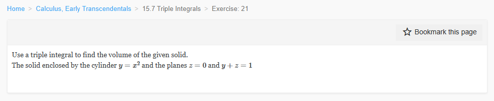

Please solve the problem in the following image.
(Image `20260927_232629_615484_utc_0800_0.png`. Alt text: Image: human_20260927_232629_615484_utc_0800)

20260927_232629_615484_utc_0800_0.png
End of problem
Answer
## Problem
Use a triple integral to find the volume of the solid enclosed by the cylinder $y=x^{2}$ and the planes $z=0$ and $y+z=1$.
---
## Step 1 — Identify the three bounding surfaces
| Surface | Equation | Role |
|---|---|---|
| Parabolic cylinder | $y=x^{2}$ | lateral (curved) wall; its rulings are parallel to the $z$-axis |
| Horizontal plane | $z=0$ | bottom (floor) |
| Slanted plane | $y+z=1$, i.e. $z=1-y$ | top (roof) |
Because the cylinder involves only $x$ and $y$, it is a *wall* standing vertically; the solid sits **above** $z=0$ and **below** $z=1-y$.
## Step 2 — Find where the roof meets the floor (this closes the solid)
The height of the solid above a point $(x,y)$ is
$$
z_{\text{top}}-z_{\text{bottom}}=(1-y)-0=1-y .
$$
For the solid to exist we need $1-y\ge 0$, i.e. $y\le 1$. So the plane $y+z=1$ cuts the plane $z=0$ in the line $y=1$, and that line — together with the cylinder $y=x^{2}$ — traps the solid.
Intersection of $y=x^{2}$ with $y=1$:
$$
x^{2}=1\quad\Longrightarrow\quad x=\pm 1 .
$$
So the projection of the solid on the $xy$-plane is the region
$$
D=\{(x,y)\mid -1\le x\le 1,\; x^{2}\le y\le 1\}.
$$
## Step 3 — Write the volume as a triple integral
Volume = $\iiint_E 1\,dV$. With $z$ as the innermost variable:
$$
V=\int_{-1}^{1}\!\int_{x^{2}}^{1}\!\int_{0}^{\,1-y} 1\;dz\,dy\,dx
$$
The limits are read outside-in: $x\in[-1,1]$, then $y$ runs from the parabola up to the line $y=1$, then $z$ runs from the floor to the roof.
---
pgfplots_0.png
---
**Reading the 3-D picture.** The blue surface is the curved wall $y=x^{2}$ (its top edge, drawn in red, is the parabola $z=1-x^{2}$ where the wall meets the roof). The orange surface is the slanted roof $y+z=1$, the green triangle-ish region at the bottom is the floor $z=0$, and the two magenta segments are the straight edges $y=1,\,z=0$ at $x=\pm1$. Notice the solid pinches to zero thickness along the line $y=1$ — exactly why $y\le 1$ bounds it.
## Step 4 — Evaluate (innermost integral, in $z$)
$$
\int_{0}^{1-y} 1\;dz = 1-y .
$$
Geometrically this just collapses the triple integral to the volume under the roof over $D$:
$V=\iint_D (1-y)\,dA$.
## Step 5 — Integrate in $y$
$$
\int_{x^{2}}^{1}(1-y)\,dy
=\left[y-\frac{y^{2}}{2}\right]_{y=x^{2}}^{y=1}
=\left(1-\tfrac12\right)-\left(x^{2}-\frac{x^{4}}{2}\right)
=\frac12-x^{2}+\frac{x^{4}}{2}
=\frac{(1-x^{2})^{2}}{2}.
$$
(The perfect-square form $\tfrac12(1-x^{2})^{2}$ is a good check: it is the height $1-y$ averaged over the strip, and it is $\ge 0$, vanishing at $x=\pm1$ where the solid closes up.)
---
pgfplots_1.png
---
**Reading the 2-D picture (the order of integration).** The shaded region $D$ is what the solid projects onto. The red arrow is a *typical vertical strip*: $y$ runs from the parabola $y=x^{2}$ up to the line $y=1$, and the strip's height is the solid's thickness $z=1-y$. Then $x$ sweeps from $-1$ to $1$. This is precisely $\int_{-1}^{1}\int_{x^{2}}^{1}(1-y)\,dy\,dx$.
## Step 6 — Integrate in $x$ (even integrand, so double the half)
$$
V=\frac12\int_{-1}^{1}\left(1-2x^{2}+x^{4}\right)dx
=\int_{0}^{1}\left(1-2x^{2}+x^{4}\right)dx
=\left[x-\frac{2x^{3}}{3}+\frac{x^{5}}{5}\right]_{0}^{1}
=1-\frac{2}{3}+\frac{1}{5}.
$$
With a common denominator $15$:
$$
V=\frac{15-10+3}{15}=\frac{8}{15}.
$$
## Step 7 — Verification
* **Other orders give the same number.** Integrating in the order $dy\,dz\,dx$ ($0\le z\le 1-x^{2}$, $x^{2}\le y\le 1-z$) and in the order $dx\,dy\,dz$ ($-\sqrt y\le x\le\sqrt y$, $0\le y\le 1-z$, $0\le z\le1$) both return $8/15$ (checked symbolically).
* **Numerical check.** A Monte-Carlo estimate of the region $\{y\ge x^{2},\; z\le 1-y\}$ inside the box $[-1,1]\times[0,1]\times[0,1]$ (volume $2$) gave $0.5341$, against the exact $8/15=0.5\overline{3}$.
## Answer
$$
V=\int_{-1}^{1}\int_{x^{2}}^{1}\int_{0}^{1-y} dz\,dy\,dx=\frac{8}{15}
$$
**Method to remember:** for a solid cut out by a *cylinder in one variable* and two planes, (1) solve each plane for the free variable ($z=1-y$), (2) set the top equal to the bottom to find the closing line ($y=1$), (3) project onto the plane of the cylinder's curve to get $D$, (4) integrate $1$ with $z$ innermost — the $z$-integral simply produces the height $1-y$, reducing the problem to a plain double integral over $D$.
$$
\boxed{\dfrac{8}{15}}
$$